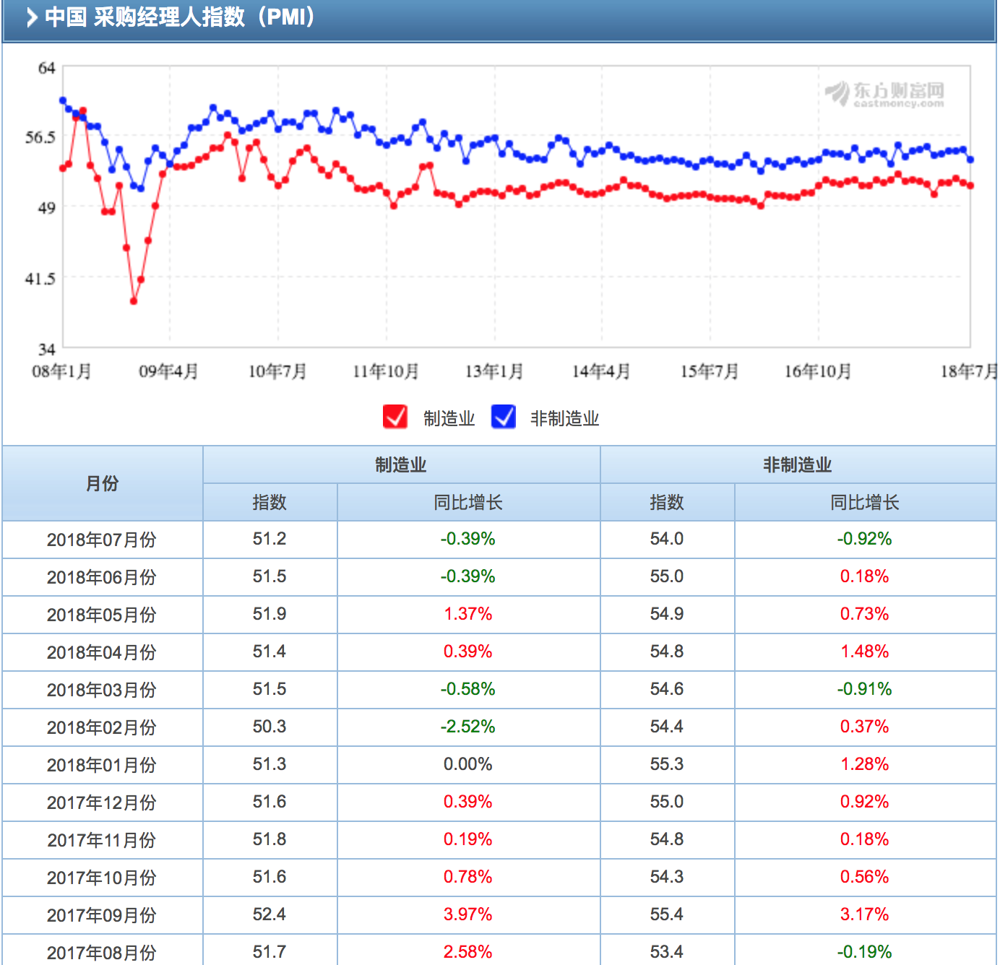
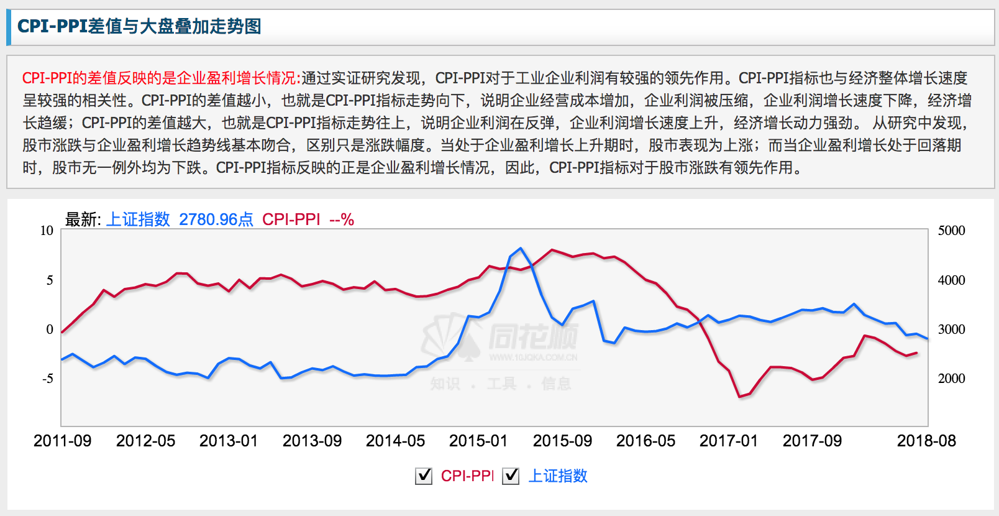
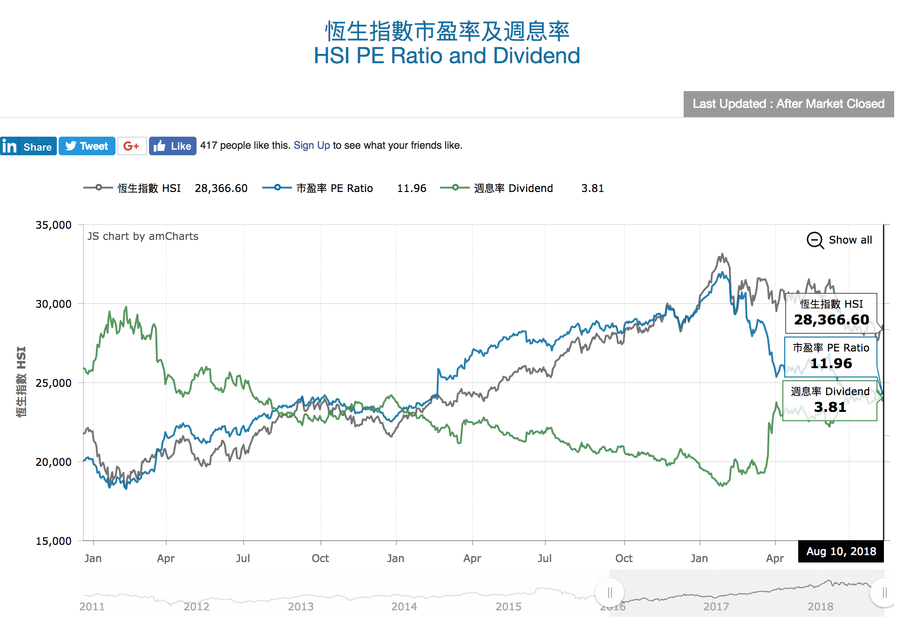

11. 如何从数据信号中捕捉投资机会？
说起专业的金融机构，你一定会想起很多电影里的画面，一堆西装革履的白领，面前放着五六块电脑屏幕，屏幕上各种花花绿绿的数据不停闪过，给人一种高深莫测的感觉。这就是专业机构投资者最日常的一项工作：数据分析。这可能是机构投资者最与众不同的能力。数据分析是一门系统的学问，包罗万象，今天我们按照数据分类来讲一下分析方法及案例。
总的来说，和投资相关的数据分为三大类：宏观的经济数据，中观的产业数据，微观的企业数据。每一类数据里都会有一些同步指标和领先指标，吃透了这些数据，不仅能帮你抓住投资机会，还能帮你规避风险。
先说一下宏观的经济数据。宏观数据主要包括三种，一是经济增长数据，二是通胀数据，三是流动性数据。这三种数据放在一起共同刻画出了经济的基本面。
经济增长可能是大家最熟悉的宏观数据，没有之一。
每个人都知道 GDP，但其实关于经济增长的数据有很多，GDP 对专业投资分析并不是最重要的，因为 GDP 频次太低，每个季度才公布一次，而且相对滞后，等你看到数据的时候，经济可能早就变了样。
最重要的指标就是 PMI 指数，也就是采购经理人指数。PMI 指数领先 GDP 指标几个月，是研判经济走势最及时的指标。从绝对值来看，PMI 指数 50 是荣枯分水线，当指数大于 50 时意味着制造业扩张，反之则意味着收缩。从相对走势来看，PMI 指数的回落或回升，表明经济周期的收缩或扩张。PMI 指数和大类资产配置尤其是股票市场关联度较高，尤其是周期性的制造业，如建材、家电、钢铁以及建筑装饰等板块。比如 2017 年中国制造业 PMI 总体走势稳中有升，年均值为 51.6%，高于荣枯线，这说明全年的制造业表现还是很强劲的，比如建材行业净利润增长率高达 56.72%，这也带动了相关板块的表现，中国建材集团旗下的北新建材、中国巨石涨幅均超过 100%。

第二个数据是通胀数据，也就是大家经常听到的 CPI（居民消费价格指数）和PPI（工业生产者出厂价格指数）。
CPI 主要衡量终端的生活用品价格，反映的是老百姓的日常生活，一般认为CPI>3% 就处在高通胀阶段，欧美国家的 CPI 长期在 0~3% 之间波动。PPI 主要衡量的是工业品的价格，包括电力、煤炭、水等能源材料和工业原材料，可以反映企业生产和投资的情况。
PPI 和 CPI 不能孤立的看待，两者之间的差值，对于分析经济和投资周期，具有重要指示意义。通胀理论很复杂，对你来说，可以记住一条基本逻辑：一般 PPI 相对 CPI 持续上涨，意味着企业有更多利润，对投资股市是利好消息。2006-2007 年、2012-2015 年 CPI 和 PPI 差值上行，所以是买股票的好时机，数据也表明股票的回报率相对较高；反之，CPI 和 PPI 的差值下跌时，说明经济需求疲弱，CPI 低迷，但原材料价格持续上涨，买商品回报率高于股票。2002-2005 年和 2016 年开始就是这样的情况。总结来说，增长和通胀的搭配决定了经济周期，高增长低通胀的复苏周期，适合买股票；低增长低通胀的通缩周期，适合买债券；低增长高通胀的滞胀周期，适合买大宗商品。

第三个数据是流动性数据，包括量和价两个方面。
数量指标包括 M2、信贷、社会融资总量等数据，由于中国的金融体系以银行为主，所以最需要关注的是信贷，信贷刺激意味着实体流动性扩张，对投资的影响非常直接。最典型的就是四万亿时期，2009 年人民币贷款增加 9.59 万亿元，同比多增 4.69 万亿元，也就是说在一年时间里贷款激增将近一倍，而一般年份的增速也就在 10% 左右，这种货币宽松不光在中国，在国外也是很罕见的。结果是什么呢？必然是风险资产暴涨，尤其是和实体流动性直接相关的房地产和股市，按照统计局的数据，当年全国新房成交价格涨幅达到 24%，实际上很多城市的房价都接近翻倍。2016 年房地产暴涨也是这样的逻辑，2016 年新增贷款总量虽然不大，但其中高达 44.8% 用于房地产贷款，房价不涨才怪。
价格数据就是利率，利率有很多种。你可以重点关注三种：一是短期的货币市场利率，核心是七天逆回购利率，最直接的体现了金融体系内的资金面情况，所谓的钱荒就是这个指标暴涨。央行通过逆回购投放基础货币，如果这个利率上调意味着央行在收紧货币。二是中期的贷款利率，每个季度央行会公布一次数据，直接影响企业和个人的融资成本，对房地产有直接影响，比如 2014 年开始房贷利率不断下调，刺激房价涨了两年。现在房贷利率上行，房价就涨不动了。三是长期的国债到期收益率，一般把它看做长期的无风险利率，当无风险利率下行的时候，意味着流动性宽松，经济预期疲弱，金融资产会有比较好的表现，比如 2014 年开始无风险利率大幅下行，催生了 2015 年的股票大牛市。
再说一下中观的产业数据。中观的产业有很多，数据也很繁杂。今天我们讲两个代表性行业，帮助你理解其中的分析方法和逻辑。总的来说，任何一个产业的数据都可以分几个维度，一是供给和需求，二是数量和价格，三是短期高频和长期低频。以大家最熟悉的房地产为例，一是关注反映需求的数量指标，这个既有相对低频的月度数据，比如全国商品房销售面积，也有相对高频的日度数据，比如 30 个大中城市商品房销售。二是关注反映供给的数量指标，比如每月的新开工面积以及待售面积，前者反映供给的增量，后者反映供给的存量。三是反映供需平衡的价格指标，包括统计局的 70 城房价数据和市场上的百城房价等等。从逻辑上讲，销售领先于价格，供给变化相对较慢，短期可以通过销售数据去预测房价。比如在 2016 年 “930” 楼市调控后，销量开始出现环比下滑，不久之后各地房价就出现下跌，至今很多城市房价已经超过 10%。长期还要结合供给数据，比如大部分城市销量在 2015-2016 年都出现回升，但很多城市房价没涨，就是因为库存太高，京沪深房价涨的多，是因为库存很低，销售一回暖房价当然暴涨。
最后说一下微观的企业数据。企业数据直接反映它的经营状况，对个股的影响最为直接。可以重点关注两个维度，一是公司的销售数据，反映其收入情况，尤其需要关注核心产品的销售；二是公司的利润率，反映其将收入转化为利润的能力，这涉及成本控制、费用管理等企业经营能力。三是公司的估值，也就是在目前的经营情况之下，其股价是否处于合理价位。讲两个具体案例：
销售数据方面讲一下战狼2的案例。电影票房就是电影相关公司的核心产品销售数据，从这里面能挖出不少投资机会。比如《战狼2》的票房达到 56.8 亿后，其电影票房保底方北京文化直接涨停，出品方和发行方包括富春通信、光线传媒、中国电影都出现一波跳涨。
利润率数据讲一下茅台的案例。茅台的产品毛利率 5 年一直维持在90%以上，而 A 股市场上白酒行业的平均毛利率在 66% 左右。这样的公司在长期来看，一定是有正收益的。市场不好的时候它最抗跌，比如在股灾期间茅台跌的最少，恢复的最快，而市场复苏的时候它涨的最快也最猛，短短几年时间茅台股价已经翻了好几倍。
估值方面讲一下港股的案例。港股的整体市盈率在 8-10 倍左右，股息率却能够达到 6％-10%，整体估值长期偏低，原来大陆和香港市场相对隔离的时候，港股的这种折价是合理的，但在沪港通和深港通的刺激之下，一定会出现修复，所以 2016-2017 年港股出现牛市，消化了与 A 股间的折价。

今天讲的内容比较多，涵盖了宏观、中观和微观的诸多数据，但也还只是数据分析的冰山一角。必须注意的是，任何一种数据都没有绝对的规律，规律本身也是在动态变化的，所以数据分析只能是投资的一种参考，真正的投资还需要结合各个维度的信息来进行系统分析，接下来的课程中我们会逐渐完善这种系统分析的方法。